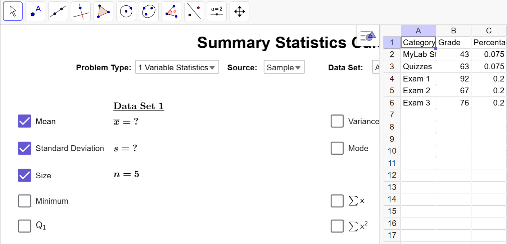
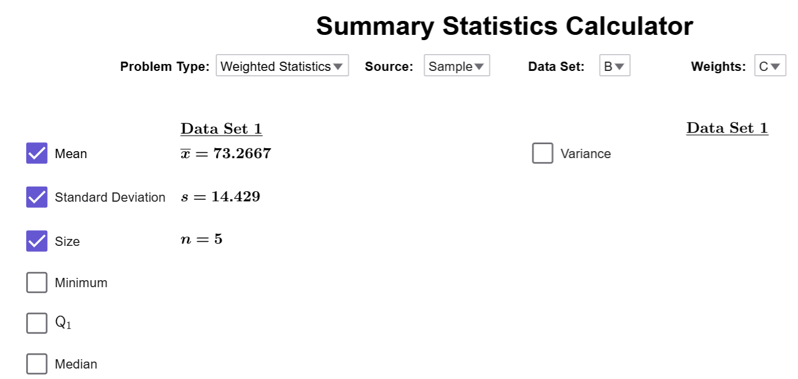
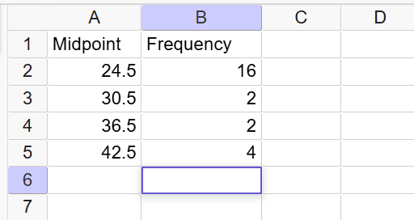
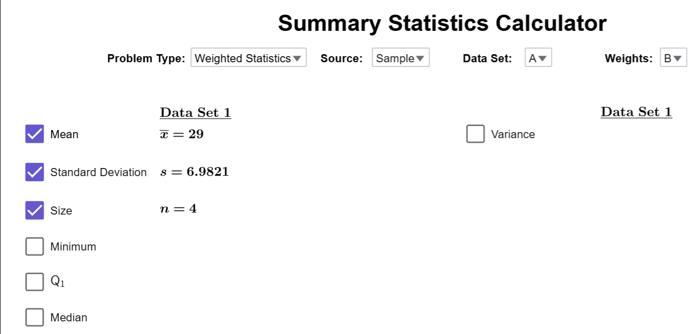

Calculating a Weighted Mean
The mean is a fundamental measure of central tendency, but not all data points contribute equally in every scenario. In cases where there are a lot of repeated values, we use the weighted mean to calculate the mean faster than a standard calculation. This section will explore different methods for calculating a weighted mean and demonstrate its applications through practical examples.
Weighted Means
Example 1
A small retail store tracks the number of sales transactions completed by seven different employees during a particular week \[ 12, 15, 15, 18, 18, 18, 25 \] Calculate the mean using the following methods.
- Part A: Using the Definition of the Mean
- Part B: Using the Definition of Multiplication to Simplify the Numerator
- Part C: Using the Definition of Multiplication and Simplifying the Fraction
Solution
Part A
\[\overline{{x}}=\dfrac{12+15+15+18+18+18+25}{{7}}=\dfrac{{121}}{{7}}\approx17.29\]
Part B
We can rewrite repeated values using multiplication: \[ 12 = 1 \times 12, \quad 15+15 = 2 \times 15, \quad 18+18+18 = 3 \times 18, \quad 25 = 1 \times 25 \] Using this, we calculate the mean as: \[ \bar{{x}} = \dfrac{1\times 12 + 2\times 15 + 3\times 18 + 1\times 25}{{7}} = \dfrac{12 + 30 + 54 + 25}{{7}} \approx 17.29 \]
Important Note
Notice that each term in the numerator follows the pattern frequency \( \times \) data. Using \( f \) for frequency and \( x \) for data, we express the numerator as \( \sum (f \cdot x) \) and the denominator as \( \sum f \). This leads to the formula: \[ \bar{{x}} = \dfrac{\sum (f \cdot x)}{\sum f} \] which is useful for computing the mean from a frequency distribution.
Part C
Let's first look at the relative frequency distribution for this dataset:
| Data Value (\(x\)) | Frequency (\(f\)) | Relative Frequency \(\left(w=\dfrac{{f}}{\sum f}\right)\) |
|---|---|---|
| 12 | 1 | \(\dfrac{{1}}{{7}}\) |
| 15 | 2 | \(\dfrac{{2}}{{7}}\) |
| 18 | 3 | \(\dfrac{{3}}{{7}}\) |
| 25 | 1 | \(\dfrac{{1}}{{7}}\) |
| Total | \(\sum f=7\) | 1 |
Now, observe what happens when we simplify our calculation from part B:
\[\begin{align*}\bar{{x}} &= \dfrac{1\times 12 + 2\times 15 + 3\times 18 + 1\times 25}{{7}} \\\\&=\dfrac{1\times 12}{{7}}+\dfrac{2\times 15}{{7}}+\dfrac{3\times 18}{{7}}+\dfrac{1\times 25}{{7}}\\\\&=\dfrac{{1}}{{7}}\times 12+\dfrac{{2}}{{7}}\times 15+\dfrac{{3}}{{7}}\times 18+\dfrac{{1}}{{7}}\times 25\\\\&\approx 17.29\end{align*}\]
Important Note
Notice that in this case, we have expressed the mean as relative frequency \(\times\) data. In the context of a mean, a relative frequency is often called a weight, and that is why we are using the variable \(w\) in the table. Therefore, for a relative frequency distribution, we can express the mean as \[\overline{{x}}=\sum(w\cdot x)\] as long as the sum of the relative frequencies add to one.
But, sometimes we want to compute an average using only some of the relative frequencies instead of all of them. For example, most online gradebooks will often ignore things like exams that have not been taken yet. So, it will only use the relative frequencies for grades you already have to give you current grade. In that case, the formula for the mean becomes \[\overline{{x}}=\dfrac{\sum(w\cdot x)}{\sum w}\].
The discussion in Example 1 motivates the following definition.
What is a Weighted Mean?
A weighted mean is the mean of a dataset where each value in the dataset has varying weights or frequencies. There are two common formulas for calculating the weighted mean.
- Using Frequencies: \[ \bar{{x}} = \dfrac{\sum (f \cdot x)}{\sum f} \]
- Using Weights or Relative Frequencies: \[ \bar{{x}} = \dfrac{\sum (w \cdot x)}{\sum w} \]
Note: In many cases, the sum of the weights (\(\sum w\)) equals 1 since we usually want to include all the data, not just some of the data.
Now that we understand the weighted mean and have explored two examples, we will use the Summary Statistics Calculator to calculate the weighted mean.
Example 2
Suppose you just took your third exam, and your grade distribution is given below. Calculate your current grade using the Summary Statistics Calculator.
| Category | Grade (%) | Percentage of Grade |
|---|---|---|
| MyLab Stat | 43% | 7.5% |
| Quizzes | 63% | 7.5% |
| Exam 1 | 92% | 20% |
| Exam 2 | 67% | 20% |
| Exam 3 | 76% | 20% |
Solution
First, we load the dataset into Summary Statistics Calculator.

Before closing the spreadsheet, let’s examine how the data is entered.The first column is just exposition data and is not relevant to the computation. Column B contains our data: the grades we get. Notice the percent symbol is dropped since GeoGebra will auto-convert the data to decimals if we include the percent symbol. In the last column, the percentage of the grade represents the weight. Since weights are given as percentages, we must convert them to decimals for accurate calculations.
After closing the spreadsheet, we will set the Problem Type to Weighted Statistics, set Data to Column B, and Weights to Column C.

The Calculator automatically computes the weighted average as \(\overline{{x}}=73.27\). Therefore, our current grade in the course is a C.
Often, data is reported through a frequency distribution rather than raw values. We can use the distribute to estimate the mean of the data using midpoints and a weighted mean. Our next example illustrates this idea.
Example 3
Use the Summary Statistics Calculator to estimate the mean gas mileage (mpg) for 24 family sedans.
| Gas Mileage (mpg) | Frequency |
|---|---|
| 22 to 27 | 16 |
| 28 to 33 | 2 |
| 34 to 39 | 2 |
| 40 to 45 | 4 |
Solution
First, we compute the midpoints for each class:
| Gas Mileage (mpg) | Midpoint | Frequency |
|---|---|---|
| 22 to 27 | 24.5 | 16 |
| 28 to 33 | 30.5 | 2 |
| 34 to 39 | 36.5 | 2 |
| 40 to 45 | 42.5 | 4 |
The midpoints become the estimated data points for the distribution. Since the data is derived from midpoints, a premade dataset is unavailable.Instead, we will manually enter the data into Summary Statistics Calculator like this:

These notes apply to all the tools that use the Spreadsheet: Row 1 is always the header, which gives a Small Description of the Data in the Column. In our case, Midpoint and Frequency. Do not enter data into Row 1, as the tool begins scanning for data from Row 2.. In rows 2-5, we recreate the table.
Once you have entered all this data into spreadsheet, you can close it, and make sure your options are set to weighted means, data is in column A, and weights in column B. If you have everything set up correctly, the mean will automatically be computed, and you'll get this screen.

Therefore, the average gas mileage is \(\overline{{x}}=29\) mpg.
Summary
Now that we understand the weighted mean and have explored examples using both frequencies and weights, we see how it provides a quicker calculation when many data points are repeated. Using tools like the Summary Statistics Calculator, we can efficiently compute weighted means in practical scenarios, such as grades, sales, and performance tracking.